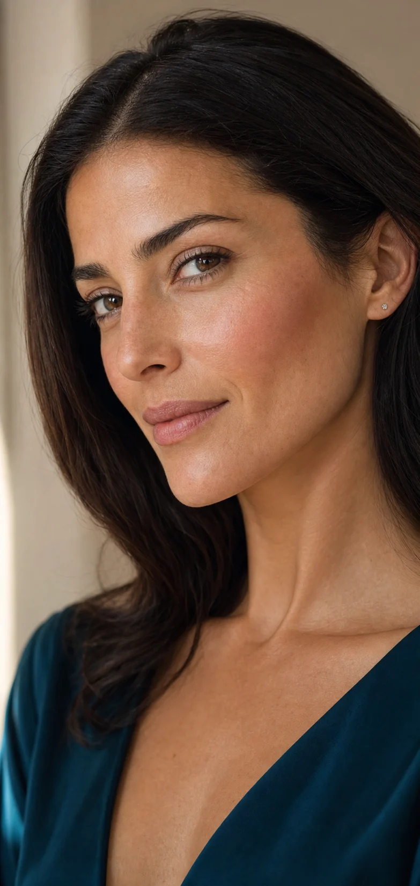

Labios · Granollers
Micropigmentación de labios natural
Definimos el contorno y equilibramos el tono respetando la forma de tus labios. La técnica y la intensidad se eligen después de valorar tu piel, tu color natural y el acabado que deseas.
Reservar valoración gratuita
Color personalizadoAdaptado a tu armonía
Diseño previoForma validada contigo
Varias técnicasCandy, Powder, 3D y Dark Lips
El tratamiento
Más definición sin perder naturalidad.
La valoración nos permite estudiar simetrías, tono, antecedentes y expectativas. Te explicamos qué técnica puede encajar contigo, cómo evoluciona el pigmento y los cuidados necesarios.
01 · DiagnósticoRevisamos piel, tono y objetivo.
02 · DiseñoElegimos forma e intensidad.
03 · SeguimientoCuidados y evolución explicados.
Descubre qué acabado encaja contigo.
Valoración profesional gratuita en Granollers.
Pedir valoración por WhatsApp